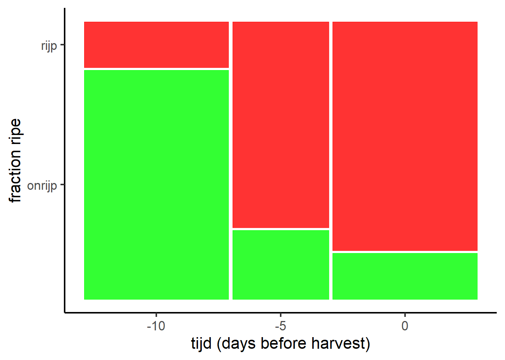
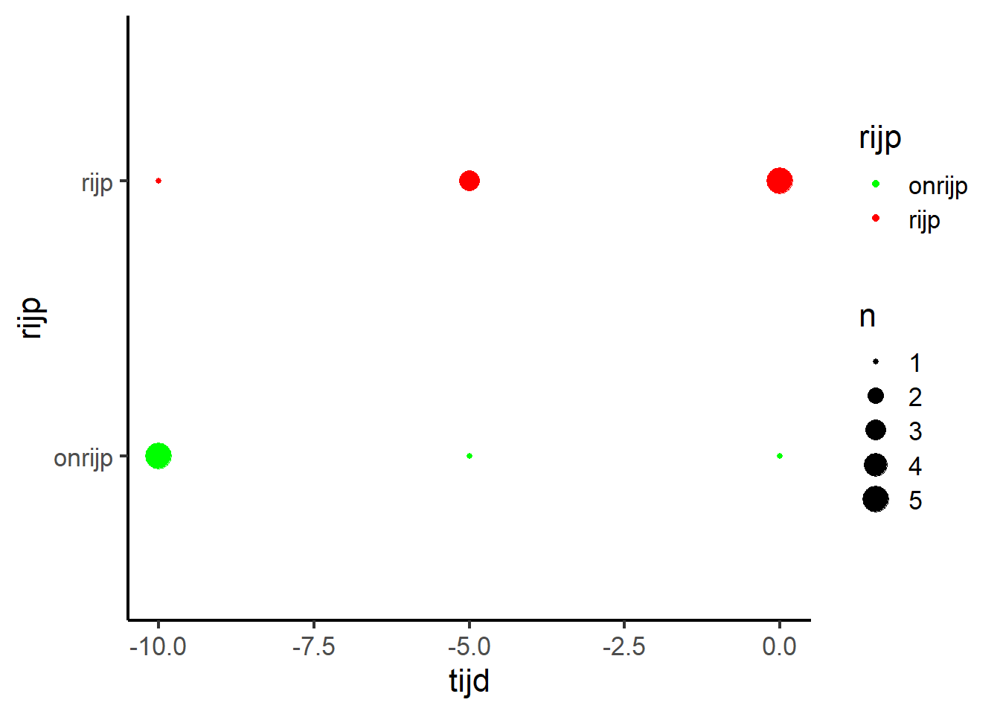
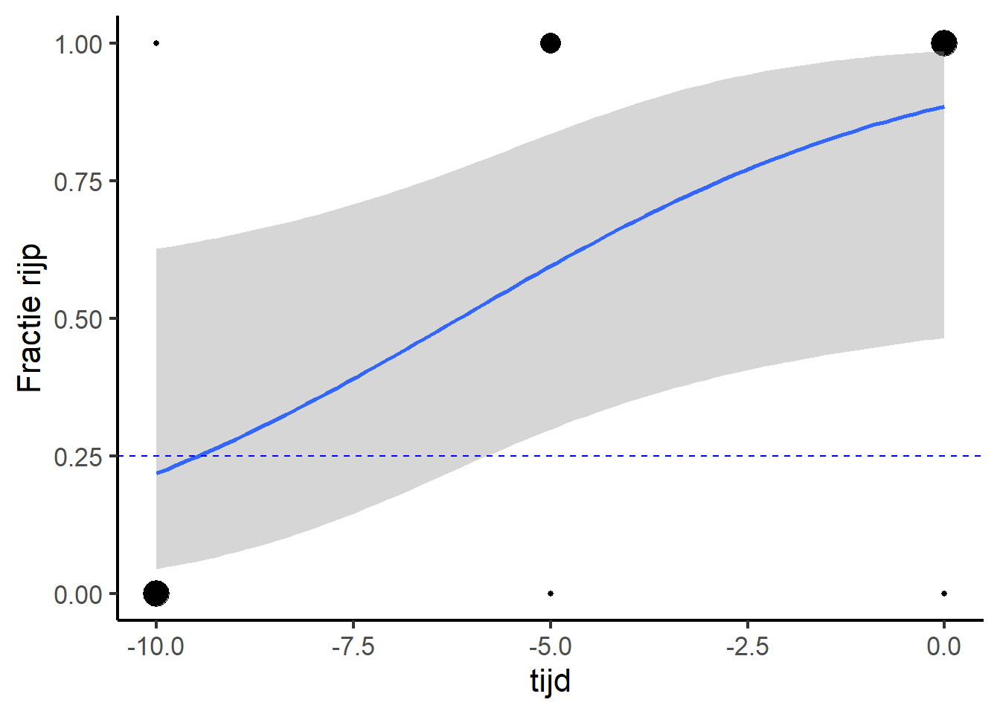

| onrijp | rijp | |
|---|---|---|
| -10 | 5 | 1 |
| -5 | 1 | 3 |
| 0 | 1 | 5 |
6 Logistic regression
Up to now you have practiced with hypothese test for numerical continuous data, but in some cases the data behaves differentially. A common type of data is binomial: categorical data with only two outcomes.
For example, a tomato grower is experimenting with the best time to harvest his tomatos:
- On six plants all tomatoes are harvested 10 days before the normal harvest time
- On four plants all tomatoes are harvested 5 days before the normal harvest time
- On another six plants all tomatoes are harvested at the normal harvest time
All harvested tomatoes are labelled ripe or not ripe:
Zulke data kan je mooi presenteren in een mozaiekplot (In het Engels mosaic plot geheten): This kind of data can be clearly presented in a mosaic plot (see script for inspiration):
library(ggmosaic)
tomaat %>%
ggplot() +
geom_mosaic(aes(x=product(tijd), fill = rijp)) +
scale_fill_manual(values = c("green", "red")) +
xlab("tijd (days before harvest)") +
ylab("fraction ripe") +
theme(legend.position = "none")
A nice feature of a mosaic plot is that you can read on both x- and y-axis which fraction is found in each category.
Exercise 6.1 mosaic plots
- install the package ggmosaic
- Import the data set tomaten.xlsx
- Make a mosaic plot with above code
- try to find out what each line of code is doing, writh down comments
6.1 binomial alternative for ANOVA’s and linear regressions
The normal linear model cannot handle a binomial respons veriable. For that you need to use a generalized linear model. The function in R is glm(). You can add your statistical model in the same way as in the function lm(), but you have to add an extra argument to make clear that your respons is binomial: family = binomial().
Warning
The response variable needs to be either a numerical variable with two values, or a factor (use factor())
H0: all harvest times have the same probability for ripe tomatoes
H1: at least some harvest times differ in probability for ripe tomatoes
fit <- glm(factor(rijp)~factor(tijd), family = binomial(), data = tomaat)NB: the function factor() is used for the explanatory variable to make clear to R that the numerica data needs to be treated as categorical data.
The normal anova() function cannot handle the output of glm(). The reason is that you cannot apply a normal analysis of variance on these type of models to calculate the p-values. Instead you need to use the Anova() function from the car package:
car::Anova(fit)Analysis of Deviance Table (Type II tests)
Response: factor(rijp)
LR Chisq Df Pr(>Chisq)
factor(tijd) 6.6179 2 0.03655 *
---
Signif. codes: 0 '***' 0.001 '**' 0.01 '*' 0.05 '.' 0.1 ' ' 1
Warning
The package car contains a number of functions with the same name as functions in tidyverse. Therefore it is not practical to activate all functions. Instead use the code car::Anova() to make R clear in which package the function can be found.
Exercise 6.2 car package
- Install the car packages
6.2 Posthoc test
Similar as in normal ANOVA’s you can apply a posthoc test with the function emmeans()
library(emmeans)
emmeans(fit, specs = pairwise ~ tijd)$emmeans
tijd emmean SE df asymp.LCL asymp.UCL
-10 -1.61 1.10 Inf -3.756 0.538
-5 1.10 1.15 Inf -1.165 3.362
0 1.61 1.10 Inf -0.538 3.756
Results are given on the logit (not the response) scale.
Confidence level used: 0.95
$contrasts
contrast estimate SE df z.ratio p.value
(tijd-10) - (tijd-5) -2.708 1.59 Inf -1.701 0.2046
(tijd-10) - tijd0 -3.219 1.55 Inf -2.078 0.0945
(tijd-5) - tijd0 -0.511 1.59 Inf -0.321 0.9448
Results are given on the log odds ratio (not the response) scale.
P value adjustment: tukey method for comparing a family of 3 estimates 6.3 Practice
A third year student Applied Biology is doing her internship at a grower and needs to test five different insecticides. She designed the following experiment:
- A certain number of flies is exposed to one of the five insecticides
- after one hour she counts the number of dead and still alive flies
You find the data set in your data map: insecticiden.xlsx
Exercise 6.3 Insecticides.
- import the data set
- Make a nice graph
- apply a logistic regression
- Test which insecticide kills significant more flies than the control
6.4 Regression with binomial data
We can also present the data in a different way:
tomaat %>%
ggplot(aes(tijd, rijp, color = rijp)) +
geom_count() +
scale_color_manual(values = c("green", "red")) 
With the function geom_count() completely overlapping points are represented with bigger dots. Alternative is geom_jitter() that randomly move the points a bit to reduce overlap.
Now we have on the x-axis not categories, but a continuous scale.
Can we do something with regression? The answer is yes!
As with lm() the function glm() can perform both ANOVAs and regressions. This time the regression is not linear, but logistic: a logistic regression.
fit2 <- glm(factor(rijp) ~ tijd, family = binomial(), data = tomaat)The only difference with the previous analysis is that now the variable tijd is NOT a factor.
car::Anova(fit2)Analysis of Deviance Table (Type II tests)
Response: factor(rijp)
LR Chisq Df Pr(>Chisq)
tijd 5.9506 1 0.01471 *
---
Signif. codes: 0 '***' 0.001 '**' 0.01 '*' 0.05 '.' 0.1 ' ' 1For the tomato grower it is important to know from what time at least 25% of the tomatoes is ripe.
We can visualise that by adding a trend line (this time method = glm) and a horizontal line through 0.25:
tomaat %>%
mutate(rijp = recode(rijp, rijp=1, onrijp=0)) %>%
ggplot(aes(tijd, rijp)) +
geom_count() +
geom_smooth(method=glm, method.args = list(family = binomial())) +
ylab("Fractie rijp") +
geom_hline(yintercept = 0.25, color = "blue", linetype = "dashed") +
theme(legend.position = "none") 
Now you see the typical S-shape of a logistic regression. From five days before the normal harvest data the fraction ripe tomatoes is above the threshold.
Warning
Within ggplot the function glm() cannot handle a factor response, but only 0 and 1 values. With the recode you can change your text to other values.
Exercise 6.4 Guppies
Pitkow et al. (1960) studied the effect of exposure to low temperature on the survival of guppies. He exposed each time 40 guppies to water at 5°C, for 3, 8, 12 or 18 minutes.
- import the data set (guppies.xlsx)
- make a clear graph, add a trend line
- apply a logistic regression
- what are your conclusions